Illustrierte Rezeptfreundliche Sortierte Klimabewusste Persönliche Einkaufsliste
Füg ein Rezept hinzu und seine Zutaten landen nach Abteilungen sortiert auf deiner Liste.
Füg ein Rezept hinzu und seine Zutaten landen nach Abteilungen sortiert auf deiner Liste.
Artikel sortieren sich selbst in die Abteilungen des Ladens, jeder mit seiner eigenen Illustration, und dein Essensplan steht ganz oben.
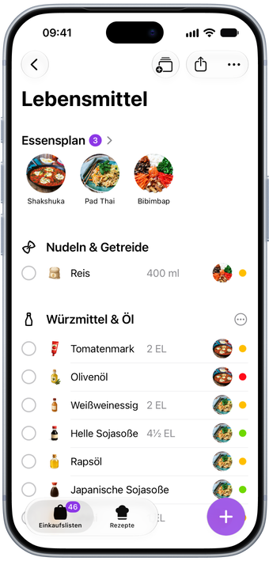
Tippe ein paar Buchstaben und Handla schlägt vor, was du meinst, und lernt dabei, was du am häufigsten kaufst.
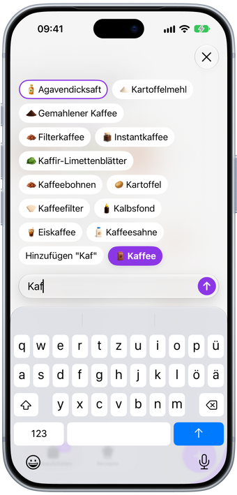
Füg einen Link zu einer Rezeptseite, einem Instagram-Reel oder einem TikTok ein, und Handla speichert das Rezept mit seinen Zutaten.
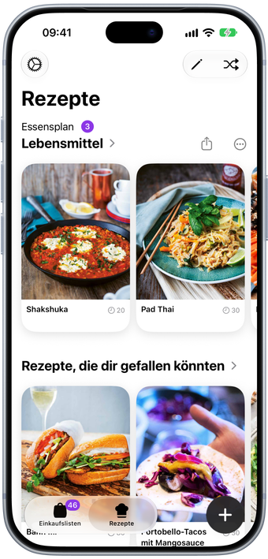
Füg ein Rezept hinzu und seine Zutaten kommen direkt auf deine Liste, passend für so viele Personen, wie du bekochst.
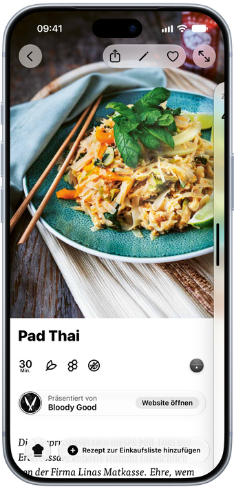
Ein Rezept auf Instagram oder TikTok entdeckt? Teile es direkt aus der App mit Handla, und es landet bei deinen Rezepten.
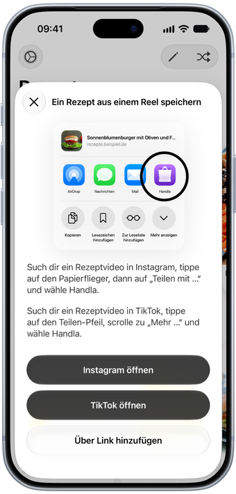
Lebensmittel, die Apotheke, das Ferienhaus. Gib jeder Liste ihren eigenen Namen, ihre eigene Farbe und ihr eigenes Symbol.
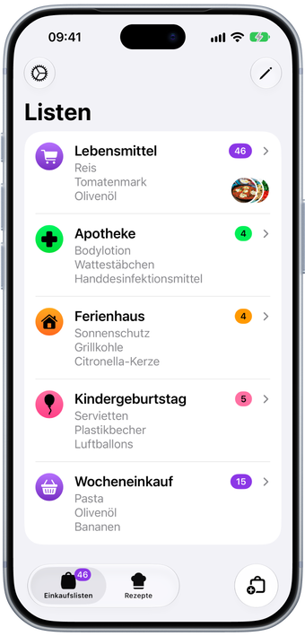
Wähl aus Dutzenden Farben und Symbolen für deine Listen, dazu ein passendes App-Symbol.
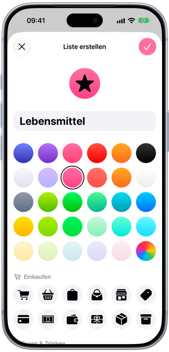
Hab eine Liste oder deinen Essensplan auf dem Home-Bildschirm und die nächste Mahlzeit auf dem Sperrbildschirm.
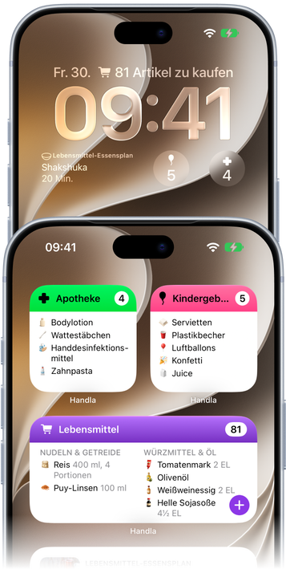
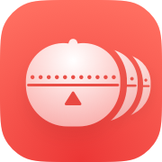
Kochen im Vollbild, mit Timern in jedem Schritt. Handla liest die Schritte vor und blättert um, wenn du eine Hand hebst.
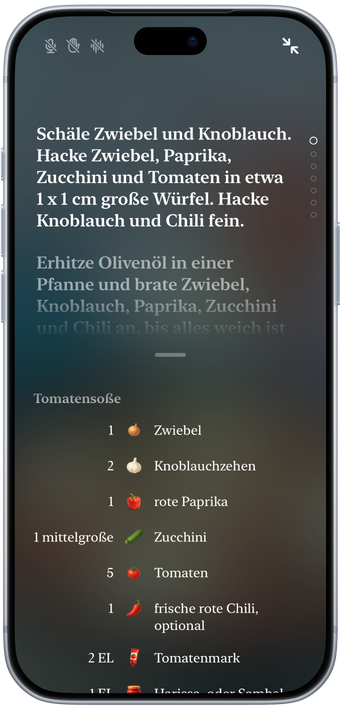
Klapp es für das große Display auf. Falte es bei einem Rezept, und der Kochmodus übernimmt.
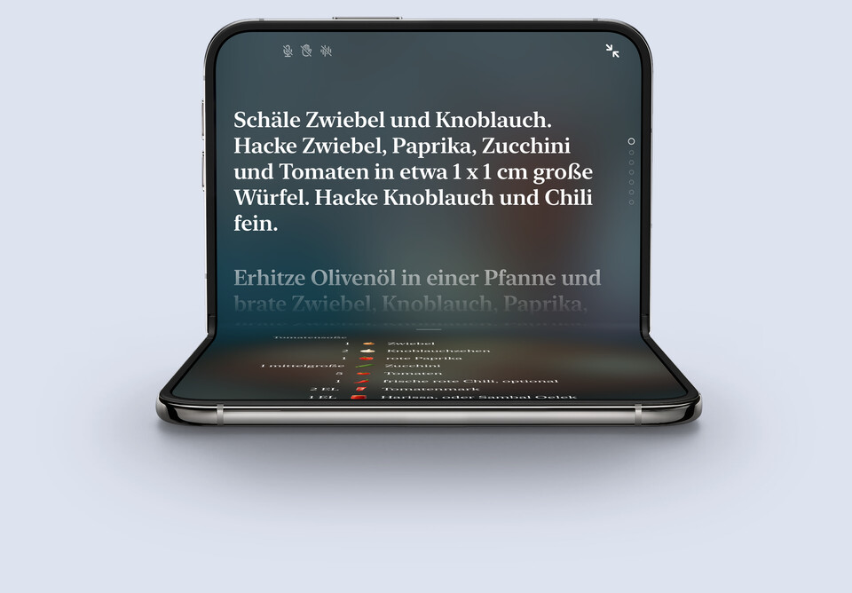
Handla ist eine Einkaufslisten-App für iPhone, iPad und iPhone Duo. Tippe ein paar Buchstaben, wähle einen Vorschlag, und der Artikel landet mit seiner eigenen Illustration in der richtigen Abteilung des Ladens. Hak beim Einkaufen ab, was du schon hast, und die Liste wird mit jedem Schritt kürzer.
Wenn du weißt, was du kochst, füg stattdessen das Rezept hinzu. Seine Zutaten kommen auf deine Liste, und das Rezept wartet dort als dein Essensplan, mit Timern in den Schritten für den Moment, in dem du mit dem Kochen loslegst.
Handla kannst du kostenlos laden und für eine Liste mit bis zu zehn Artikeln nutzen. Handla Premium, ein In-App-Abo mit 7 Tagen kostenlosem Testzeitraum, hebt die Grenze auf und bringt dir so viele Listen, wie du möchtest, und unbegrenzt viele gespeicherte Rezepte. Der Preis wird dir in der App immer angezeigt, bevor du dich festlegst, und du kannst jederzeit kündigen.
Jeder Artikel, den du hinzufügst, kommt in seine Abteilung, etwa Gemüse, Milchprodukte oder Backwaren, so gehst du einmal durch den Laden statt im Zickzack. Du kannst die Abteilungen in die Reihenfolge deines eigenen Ladens ziehen.
Ja. Schick eine Liste als Text an wen du willst, über Nachrichten, Mail oder jede andere App, oder druck sie aus. Rezepte und ganze Essenspläne lassen sich als Link teilen und mit oder ohne Fotos drucken, um Tinte zu sparen. Beim Teilen wird eine Kopie verschickt, eine Liste bleibt also zwischen verschiedenen Personen nicht synchron.
Ja. Füg ein Rezept zu einer Liste hinzu und seine Zutaten kommen direkt darauf, nach Abteilungen sortiert und auf die Anzahl der Personen umgerechnet, für die du kochst. Das Rezept bleibt als dein Essensplan auf der Liste, bereit, wenn es Zeit zum Kochen ist.
Ja. Füg einen Link zu einer Rezeptseite, einem Instagram-Reel oder einem TikTok ein, oder teile ihn aus Safari oder der jeweiligen App mit Handla, und Handla speichert das Rezept mit Zutaten und Schritten.
Ja. Der Kochmodus im Vollbild kann jeden Schritt vorlesen, hört auf Befehle wie „nächster Schritt“ und blättert um, wenn du die Hand hebst. Die Timer sind in die Schritte eingebaut, ein Tippen genügt, um einen zu starten.
Ja. Leg eine Liste oder deinen Essensplan auf den Home-Bildschirm und behalte die nächste Mahlzeit oder die Anzahl der Artikel einer Liste auf dem Sperrbildschirm im Blick.
Ja. Handla ist für iPhone, iPad und iPhone Duo gemacht. Klapp das Duo auf und deine Listen füllen den großen Bildschirm, mit einer optionalen Seitenleiste und einem Kartenlayout, das für den zusätzlichen Platz gemacht ist.
Englisch, Schwedisch, Dänisch, Deutsch, Spanisch, Finnisch, Französisch, Isländisch, Japanisch, Norwegisch und Niederländisch, samt den Namen der Lebensmittel.
Nein. Handla ist eine App für iPhone und iPad.
Schreib uns an hello@filibaba.com oder schau beim Support vorbei. Wir lesen alles.